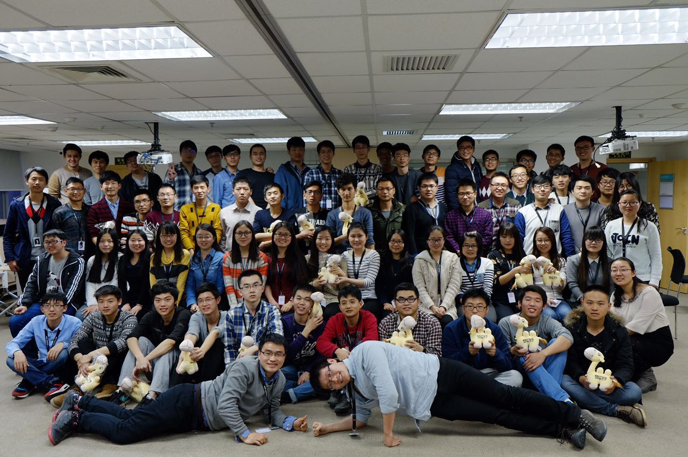
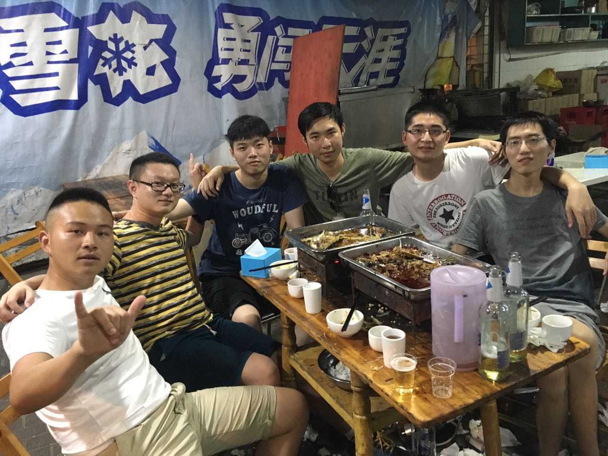

01
Jan
2017
2016走了
2017年1月份已经快过去了，再有两天就是春节。在这之前的春节，都是作为一个学生的身份，自然是有寒假的，这第一年工作，却要等到大年三十才能回家，多少还是有些不适应。加上北京这两天风特别大，这不，得了感冒了，今天还请了一天病假，才有时间坐在家里开始完成这一篇16年总结。其实20多天前就计划要写年终总结，但是最近很多事情都在耽误这一计划。加上需要将博客从jekyll迁移到hexo，使得每次打开博客，大部分时间都是在完成博客页面主题的编写，所以在博客文章上花的时间少了很多（其实之前好像也没花多少时间，惭愧）。
其实除了几篇技术文章，我几乎没有写过博客，以前倒是坚持写过一段时间的日记，但也总是断断续续。这当中一个很重要的原因就是从小作文就不太好，不太会用文字去描述身边的事情和自己的想法（比如上面这一段文字，就花了大概十分钟，删删减减才完成的），但我本身是很想去表达一些东西的。这个博客是16年10月份左右搭建起来的，大部分时间都用在了前端页面的编写上面了，起初是希望能够做一些技术上的总结，后来发现可以将生活中的一些总结也记录在此，再之后又添加了read版块。有点偏题了，已经不像是年终总结了。下面开始回到正题。
去年这一年是我从一个面向学校的学生转变为面向社会的工作者的一年。和很多毕业生一样，有一点迷茫，也有对未来的无限向往，我们就像一个个梦想家，有着无限的期望。但是我现在更希望做一个实干家，或者说行动大于空想。我是在15年的9月21号左右通过qunar面试的，这之前也参加过其他公司的校招，但是我之前的校招经历比较坎坷。因此我对qunar是非常感激的，加上面试的两位面试官也给我很好的感觉。所以在拿到qunar的offer之后，我几乎没有再考虑过其他公司。虽然随之而来的消息是qunar被携程合并，管理层的集体退出，以及多家航司对qunar的联合打击。
16年春节后，来到北京参加qunar的技术培训，和另外几个qunar的小伙伴，一起合租，一个房间睡了三个人，当时算了下，那一套房子有5个房间，一共住了14个人，当时最大的愿望就是，转正之后一定要有自己房间。期间公司培训的内容就是java后端开发那一套，个人觉得那是面向初学者的，所以我一有时间就去写毕业设计了，现在想起来多少有一些后悔。这可以算是我第一次参加工作，之前在学校很少出去兼职赚钱，大多数时间都是在团队或者实验室写代码做项目，感觉自己确实很契合程序员这个职业-够宅够闷骚。

5月初的时候，趁着劳动节就回学校了，因为马上就要做毕业答辩，但是论文什么都还没写。记得离开北京的时候，还是挺高兴的，毕竟学校还有一大堆的同学和朋友在等着我回去。期间和几个好朋友去了一趟云南，这是第一次去云南，我们先是坐飞机来到了昆明，然后去了大理、丽江、香格里拉。那边的风景实在是很漂亮，特别是从大理的苍山上俯瞰整个大理。说来也是缘分，之后我在qunar工作认识的，也就是我现在的女朋友，就是来自云南的，因此我觉得我和云南还是挺有缘分的。回到学校，便是答辩，合照，聚会。有些细节现在已经忘记，记得最清楚的是毕业季真的很难过。可能是因为大家都舍不得，室友们几乎都是同一天走的。
